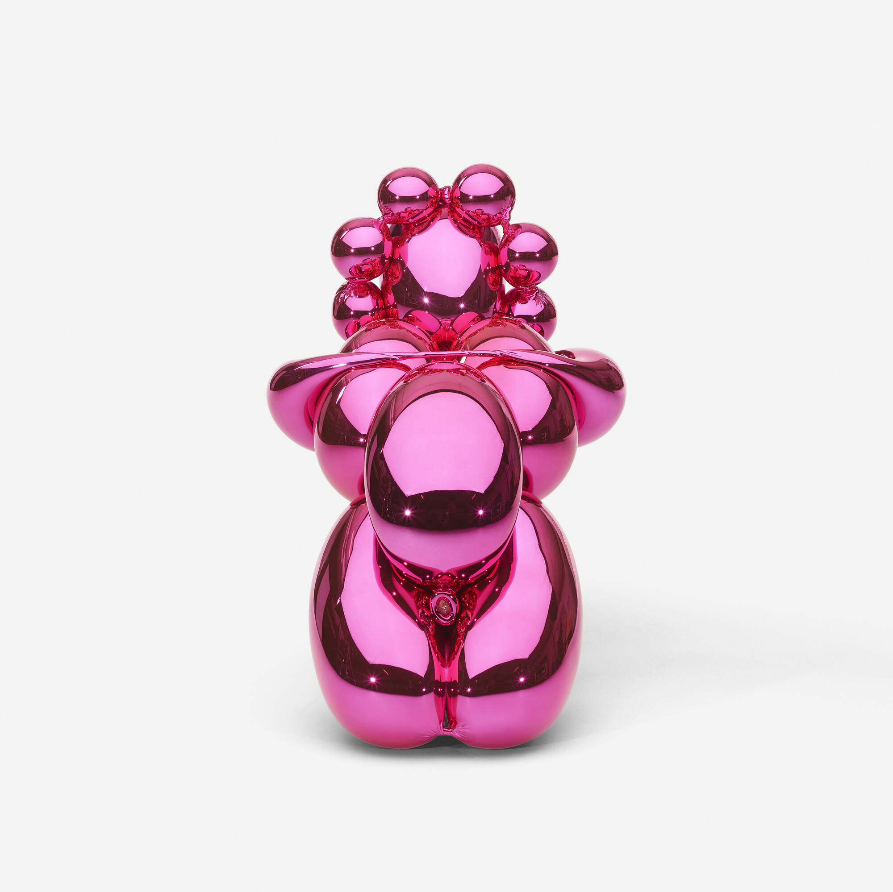

<!doctype html>
<html lang="en">
<head>
<meta charset="utf-8"/>
<meta name="viewport" content="width=device-width, initial-scale=1.0, viewport-fit=cover"/>
<meta name="apple-mobile-web-app-capable" content="yes"/>
<meta name="apple-mobile-web-app-status-bar-style" content="black-translucent"/>
<title>Moco Scratch</title>
<link rel="preconnect" href="https://fonts.googleapis.com">
<link rel="preconnect" href="https://fonts.gstatic.com" crossorigin>
<link href="https://fonts.googleapis.com/css2?family=Syne:wght@400;600;700;800&family=Inter:wght@300;400;500;600;700&display=swap" rel="stylesheet">
<style>
  *, *::before, *::after { box-sizing: border-box; margin: 0; padding: 0; }

  :root {
    --pink:       #E4007B;
    --pink-soft:  #fce8f3;
    --pink-deep:  #b30061;
    --ink:        #000000;
    --ink-2:      #333333;
    --ink-soft:   #888888;
    --paper:      #ffffff;
    --paper-2:    #f5f5f5;
    --border:     #e0e0e0;
  }

  html, body {
    height: 100%;
    background: #111;
    -webkit-tap-highlight-color: transparent;
    -webkit-text-size-adjust: 100%;
    overscroll-behavior: none;
  }

  body {
    display: flex;
    justify-content: center;
    align-items: stretch;
    min-height: 100dvh;
    font-family: 'Inter', system-ui, sans-serif;
  }

  #root {
    width: 100%;
    max-width: 430px;
    background: var(--paper);
    position: relative;
    display: flex;
    flex-direction: column;
    overflow: hidden;
  }

  button { border: none; cursor: pointer; background: none; font-family: 'Inter', sans-serif; }
  button:active { opacity: 0.8; transform: scale(0.97); }
  input { font-family: 'Inter', sans-serif; }

  /* Screen slide transitions */
  .screen-slide-in  { animation: slideIn  0.28s cubic-bezier(0.22,1,0.36,1) forwards; }
  .screen-slide-out { animation: slideOut 0.28s cubic-bezier(0.22,1,0.36,1) forwards; }
  @keyframes slideIn  { from { transform: translateX(100%); } to { transform: translateX(0); } }
  @keyframes slideOut { from { transform: translateX(0); } to { transform: translateX(-100%); } }

  /* Art container — clean, photo-ready */
  .art-hatch {
    position: relative;
    overflow: hidden;
    border: 1px solid var(--border);
    border-radius: 4px;
  }

  /* Gold scratched-leaf overlay for Reveal tiles */
  .gold-leaf {
    position: absolute;
    inset: -12%;
    pointer-events: none;
    z-index: 3;
    background:
      linear-gradient(112deg,
        transparent 0%, transparent 36%,
        rgba(201,160,78,0.80) 40%, rgba(248,227,163,0.92) 48%,
        rgba(138,107,42,0.80) 54%, transparent 60%, transparent 100%);
    mix-blend-mode: screen;
    filter: blur(0.3px);
  }
  .gold-leaf::after {
    content: '';
    position: absolute;
    inset: 0;
    background:
      linear-gradient(72deg,
        transparent 60%, rgba(248,227,163,0.65) 68%,
        rgba(201,160,78,0.50) 74%, transparent 82%);
  }

  /* Scrollbar styling */
  ::-webkit-scrollbar { width: 3px; }
  ::-webkit-scrollbar-track { background: transparent; }
  ::-webkit-scrollbar-thumb { background: var(--pink-soft); border-radius: 2px; }

  /* Artwork image ready — fills the container, no flicker */
  .art-img { position: absolute; inset: 0; width: 100%; height: 100%; object-fit: cover; display: block; }

  /* Shimmer pulse for photo placeholder areas */
  @keyframes shimmer {
    0%   { opacity: 0.55; }
    50%  { opacity: 0.85; }
    100% { opacity: 0.55; }
  }
  .art-shimmer { animation: shimmer 2.4s ease-in-out infinite; }
</style>

<script src="https://unpkg.com/react@18.3.1/umd/react.development.js"
  integrity="sha384-hD6/rw4ppMLGNu3tX5cjIb+uRZ7UkRJ6BPkLpg4hAu/6onKUg4lLsHAs9EBPT82L"
  crossorigin="anonymous"></script>
<script src="https://unpkg.com/react-dom@18.3.1/umd/react-dom.development.js"
  integrity="sha384-u6aeetuaXnQ38mYT8rp6sbXaQe3NL9t+IBXmnYxwkUI2Hw4bsp2Wvmx4yRQF1uAm"
  crossorigin="anonymous"></script>
<script src="https://unpkg.com/@babel/standalone@7.29.0/babel.min.js"
  integrity="sha384-m08KidiNqLdpJqLq95G/LEi8Qvjl/xUYll3QILypMoQ65QorJ9Lvtp2RXYGBFj1y"
  crossorigin="anonymous"></script>
</head>
<body>
<div id="root"></div>

<script type="text/babel" data-presets="env,react">
const { useState, useEffect, useRef, useCallback } = React;

// ─── DATA ──────────────────────────────────────────────────────────────────

const ARTWORKS = [
  {
    artist: "BANKSY · 2003 · STENCIL",
    title: "Love is in the Air",
    prompt: "A masked rioter mid-throw — but it's flowers in his hand.",
    body: "Banksy converts an act of protest into a still life. The bouquet refuses the script: protest as bloom, not blast.",
    extra: "Stencilled on a garage wall in Jerusalem, the piece was made to be photographed and travel further than the wall ever could. Every reproduction since has wrestled with whether peace can be merch.",
    facts: ["Stencil on wall, Bethlehem 2003", "Officially anonymous", "Most-reproduced street artwork"],
    bg: "#e8e4de", img: './images/banksy-flower-thrower.webp',
    portrait: './images/portraits/banksy.jpg',
  },
  {
    artist: "KEITH HARING · 1982",
    title: "USA 1982",
    prompt: "Made as Cold War anxiety peaked, this work turned existential fear into something almost childlike.",
    body: "Crayon-scratched icons against a graffiti backdrop — fear translated into a kid's drawing of the apocalypse.",
    extra: "Haring painted USA 1982 as nuclear anxiety filled American news. The looping figure, glowing cross, and atomic symbol share a surface because that's how the threat arrived — all at once, shouted, on a banner you couldn't ignore.",
    facts: ["Acrylic on canvas tarp, 1982", "Shown at MoCo Barcelona", "Part of Haring's activist series"],
    bg: "#c8281e", img: './images/keith-haring-usa-1982.webp',
    portrait: './images/portraits/keith-haring.jpg',
  },
  {
    artist: "BASQUIAT · 1983",
    title: "Flash in Naples",
    prompt: "Four canvases, one mythology — superheroes rewritten through a Black New Yorker's eyes.",
    body: "Basquiat rewires pop-culture icons with layered text and raw paint, turning Batman and The Flash into vessels for Black history and power.",
    extra: "Created after a trip to Italy where Basquiat absorbed Renaissance fresco technique. He came back and applied the same epic scale to comics, television, and advertising — elevated precisely because the mainstream said they didn't belong on canvas.",
    facts: ["Acrylic & oilstick on 4 canvases, 1983", "Acquired by MoCo Amsterdam", "Part of the Moco permanent collection"],
    bg: "#d4a040", img: './images/basquiat-flash-in-naples.jpg',
    portrait: './images/portraits/basquiat.jpg',
  },
  {
    artist: "JEFF KOONS · 2014",
    title: "Balloon Venus",
    prompt: "A Palaeolithic fertility goddess reimagined as a chrome party balloon.",
    body: "Koons collapses 35,000 years of human desire into a single glossy surface that reflects you back at yourself.",
    extra: "The Balloon Venus series revisits the Venus of Willendorf — one of humanity's oldest sculptures — through the language of balloon animals and mirror finishes. The object is simultaneously ancient symbol, luxury item, and children's party prop. That's the point.",
    facts: ["Polished steel, magenta, 2013–14", "Part of the Gazing Ball series", "Shown at Gagosian & MoCo"],
    bg: "#f0c0d8", img: './images/jeff-koons-balloon-venus.jpg',
    portrait: './images/portraits/jeff-koons.jpg',
  },
  {
    artist: "DAMIEN HIRST · 2021",
    title: "Politeness",
    prompt: "10,000 hand-applied dots of paint build a blossoming tree from pure gesture.",
    body: "Hirst's Cherry Blossom paintings ask whether beauty can be made by repetition alone — and whether it matters that a human hand placed every mark.",
    extra: "Each Cherry Blossom canvas took months of studio labour, with assistants individually placing each dot of paint. The works arrived during lockdown and sold out before anyone could see them in person — a kind of irony Hirst has always been comfortable with.",
    facts: ["Oil on canvas, 2021", "From the Cherry Blossom series", "Shown at Helly Nahmad Gallery & MoCo"],
    bg: "#7dd4e8", img: './images/damien-hirst-cherry-blossom.webp',
    portrait: './images/portraits/damien-hirst.jpg',
  },
  {
    artist: "BANKSY · ~2010 · SCREENPRINT",
    title: "Choose Your Weapon",
    prompt: "A hooded figure walks a Keith Haring dog — one icon on another's leash.",
    body: "Banksy borrows Haring's barking dog symbol and puts it on a chain, turning an act of artistic homage into a commentary on ownership and legacy.",
    extra: "Haring chalked his dog on New York subway walls in the early 80s. Banksy's reuse 25 years later asks whether street art's icons can survive co-option — or whether borrowing another artist's symbol is itself a form of control.",
    facts: ["Screenprint, edition of 250", "Grey variant, ~2010", "References Keith Haring"],
    bg: "#a8b4c0", img: './images/banksy-choose-your-weapon.jpg',
    portrait: './images/portraits/banksy.jpg',
  },
  {
    artist: "BANKSY · ~2002 · SCREENPRINT",
    title: "Happy Choppers",
    prompt: "Military helicopters dressed with pink ribbons — war made ridiculous.",
    body: "Banksy decorates instruments of war with the language of gift-giving, making the absurdity of military spending impossible to ignore.",
    extra: "Made during the build-up to the Iraq War, the piece was Banksy's most direct anti-war statement of the era. The pink bows do more political work than any slogan could.",
    facts: ["Screenprint on paper", "Limited edition, ~2002", "Anti-war series"],
    bg: "#5888b8", img: './images/banksy-happy-choppers.jpg',
    portrait: './images/portraits/banksy.jpg',
  },
  {
    artist: "BANKSY · 2001 · STENCIL",
    title: "Grin Reaper",
    prompt: "Death arrives — and he's smiling.",
    body: "The Grim Reaper's skull replaced by a smiley face: Banksy's most succinct commentary on the cheerfulness we perform in the face of mortality.",
    extra: "One of Banksy's earliest recognisable works, from his Bristol years. The clock face beneath adds a layer — time is running out, but somehow the whole thing feels optimistic.",
    facts: ["Stencil on canvas, 2001", "Bristol", "First major gallery edition"],
    bg: "#d8d0c4", img: './images/banksy-grin-reaper.jpg',
    portrait: './images/portraits/banksy.jpg',
  },
  {
    artist: "BANKSY · ~2006 · STENCIL",
    title: "Hard Hat Tortoise",
    prompt: "A tortoise with a hard hat — slow, armoured, surviving the city.",
    body: "Banksy grafts construction safety onto nature, giving the tortoise a hard hat shell. Urban survival as evolutionary adaptation.",
    extra: "Found spray-painted in London, the piece runs counter to the fast pace of city development. The tortoise endures; the buildings around it change. Every city has construction. Not every city has patience.",
    facts: ["Spray on wall, ~2006", "London street piece", "Limited print edition"],
    bg: "#2858a8", img: './images/banksy-tortoise.webp',
    portrait: './images/portraits/banksy.jpg',
  },
  {
    artist: "BANKSY · ~2003 · STENCIL",
    title: "Our Lady",
    prompt: "A Renaissance Madonna stencilled onto a metal door — sacred imagery in secular space.",
    body: "Banksy places Old Master religious iconography on industrial metal, questioning where the sacred belongs in a modern city.",
    extra: "Part of a series exploring the collision of religious imagery and urban environment. The rivet-bordered metal sheet frames the Madonna like a reliquary — devotional object repurposed as street furniture.",
    facts: ["Stencil on metal sheet, ~2003", "Religious iconography series", "Wall and Piece collection"],
    bg: "#888890", img: './images/banksy-madonna.jpg',
    portrait: './images/portraits/banksy.jpg',
  },
  {
    artist: "KEITH HARING · 1982",
    title: "Untitled (Man and Dog)",
    prompt: "A man and dog rendered in Haring's universal visual language.",
    body: "Two bodies — one human, one animal — outlined in Haring's signature thick white line on black. Joyful, urgent, universal.",
    extra: "Haring began drawing in New York subway stations in 1980, using chalk on blank advertising panels. Each figure emerged in minutes. The man-and-dog motif reappeared throughout his career as a symbol of loyalty, play, and pure energy.",
    facts: ["Acrylic on canvas, 1982", "White on black", "Subway drawing series"],
    bg: "#1e1e1e", img: './images/keith-haring-man-and-dog.png',
    portrait: './images/portraits/keith-haring.jpg',
  },
  {
    artist: "ROBIN KID · 2022",
    title: "The Future is Old",
    prompt: "A young man on an American flag in Air Jordans — youth, power, and exhaustion.",
    body: "Robin Kid's hyper-detailed paintings place contemporary youth in symbolic tableaux. Here, the future sits tired on the flag that promised it everything.",
    extra: "Shown at Moco Barcelona, the work captures a generation that inherited enormous symbols — nationalism, sneaker culture, aspiration — and feels uncertain what to do with all of it. The Air Jordans are both trophy and weight.",
    facts: ["Oil on canvas, 2022", "Shown at Moco Barcelona", "New Figuration movement"],
    bg: "#e0d8c8", img: './images/robin-kid-future.webp',
    portrait: null,
  },
  {
    artist: "GUILLERMO LORCA · ~2019",
    title: "El Festín",
    prompt: "A feast of animals and a solitary woman — desire, abundance, unease.",
    body: "Lorca's hyperrealistic canvases blur the line between fairy tale and nightmare. Animals crowd a woman in Victorian dress inside an ornate gilded room.",
    extra: "Chilean artist Guillermo Lorca paints from a tradition of 19th-century salon painting but fills it with contemporary psychological tension. Every surface is obsessively rendered, every gesture ambiguous. You can't tell if she's enchanted or trapped.",
    facts: ["Oil on canvas, ~2019", "Santiago, Chile", "Shown at Moco Barcelona"],
    bg: "#c8a870", img: './images/guillermo-lorca-feast.jpg',
    portrait: null,
  },
  {
    artist: "GUILLERMO LORCA · ~2018",
    title: "El Jardín",
    prompt: "A girl with butterfly wings in a garden where flowers and monsters share space.",
    body: "Lorca's signature mix of childhood wonder and menace: a fantastical garden where beauty and danger are interchangeable.",
    extra: "Lorca's work draws on Northern European fairy painting — Millais, Rackham — displaced into a Latin American psyche. The flamingos, the oversized blooms, the lurking creatures. Beauty here is never innocent.",
    facts: ["Oil on canvas, ~2018", "Santiago, Chile", "Fairy tale series"],
    bg: "#d8b8c0", img: './images/guillermo-lorca-garden.jpg',
    portrait: null,
  },
  {
    artist: "LOREAMUS FALSUS · 2024",
    title: "I Like People",
    prompt: "A crowd of strangers, and the exhaustion of loving them anyway.",
    body: "Hundreds of simplified figures fill the canvas. A speech bubble floats above: 'I Like People But They Make Me Very, Very Tired.'",
    extra: "Social satire rendered in the visual language of crowd control diagrams. The warmth and the weariness balance exactly. The work arrived at Moco Barcelona during a period when everyone understood immediately what it meant.",
    facts: ["Mixed media on canvas, 2024", "Shown at Moco Barcelona", "Red and white palette"],
    bg: "#f0e8e4", img: './images/loreamus-falsus-crowd.jpg',
    portrait: null,
  },
];

// ─── VISUAL INSIGHT DATA ───────────────────────────────────────────────────
// One entry per ARTWORKS entry (same order). Used by the bento ZoomCard.
const INSIGHTS_V = [
  {
    artist: "BANKSY", yearMade: 2003, title: "Love is in the Air",
    locationLabel: "Bethlehem · Wall", mapKey: 'bethlehem', mapXY: [49, 37],
    durationLabel: "~ 1 night", durationFraction: 0.02,
    mood: { label: "defiant", emoji: "•∇•" }, moodPos: [18, 32],
    materials: ["spray", "stencil", "wall", "flowers"], technique: "stencil",
    process: "0:18 · on the wall",
    artistLife: { born: 1974, died: null, marker: 2003 }, artistAge: 29,
    wealthScale: 0.50,
    movement: ["Street art", "Protest", "Subversion"],
    hashtags: ["#peace", "#palestine", "#stencil", "#iconic"],
    others: 4,
  },
  {
    artist: "KEITH HARING", yearMade: 1982, title: "USA 1982",
    locationLabel: "New York · East Village", mapKey: 'new_york', mapXY: [56, 39],
    durationLabel: "~ 2 days", durationFraction: 0.08,
    mood: { label: "urgent", emoji: "!_!" }, moodPos: [82, 22],
    materials: ["acrylic", "canvas tarp", "marker"], technique: "bold outline",
    process: "1:05 · painting the tarp",
    artistLife: { born: 1958, died: 1990, marker: 1982 }, artistAge: 24,
    wealthScale: 0.42,
    movement: ["Pop art", "Graffiti", "Activism"],
    hashtags: ["#coldwar", "#nyc", "#protest", "#icon"],
    others: 7,
  },
  {
    artist: "BASQUIAT", yearMade: 1983, title: "Flash in Naples",
    locationLabel: "New York · Crosby St loft", mapKey: 'new_york', mapXY: [53, 38],
    durationLabel: "~ 3 weeks", durationFraction: 0.28,
    mood: { label: "electric", emoji: "⚡_⚡" }, moodPos: [30, 25],
    materials: ["acrylic", "oilstick", "canvas", "collage"], technique: "neo-expressionist",
    process: "0:44 · loft sessions",
    artistLife: { born: 1960, died: 1988, marker: 1983 }, artistAge: 23,
    wealthScale: 0.68,
    movement: ["Neo-expressionism", "Pop", "Street art"],
    hashtags: ["#comics", "#blackpower", "#nyc", "#superhero"],
    others: 9,
  },
  {
    artist: "JEFF KOONS", yearMade: 2014, title: "Balloon Venus",
    locationLabel: "New York · Studio", mapKey: 'new_york', mapXY: [51, 29],
    durationLabel: "~ 2 years", durationFraction: 0.85,
    mood: { label: "playful opulence", emoji: "◉‿◉" }, moodPos: [55, 20],
    materials: ["polished steel", "mirror finish", "chrome"], technique: "fabricated steel",
    process: "2:10 · studio process",
    artistLife: { born: 1955, died: null, marker: 2014 }, artistAge: 59,
    wealthScale: 0.98,
    movement: ["Neo-pop", "Kitsch", "Conceptual"],
    hashtags: ["#balloon", "#venus", "#luxury", "#reflection"],
    others: 14,
  },
  {
    artist: "DAMIEN HIRST", yearMade: 2021, title: "Politeness",
    locationLabel: "London · Newport St", mapKey: 'london', mapXY: [62, 43],
    durationLabel: "~ 6 months", durationFraction: 0.72,
    mood: { label: "hopeful", emoji: "◠‿◠" }, moodPos: [28, 18],
    materials: ["oil paint", "canvas", "brush dots"], technique: "hand-applied dots",
    process: "3:20 · the dot process",
    artistLife: { born: 1965, died: null, marker: 2021 }, artistAge: 56,
    wealthScale: 0.95,
    movement: ["YBA", "Neo-pop", "Conceptual"],
    hashtags: ["#cherryblossom", "#spring", "#dots", "#beauty"],
    others: 8,
  },
  {
    artist: "BANKSY", yearMade: 2010, title: "Choose Your Weapon",
    locationLabel: "London · Screenprint", mapKey: 'london', mapXY: [55, 36],
    durationLabel: "~ 1 day", durationFraction: 0.04,
    mood: { label: "ironic" }, moodPos: [70, 30],
    materials: ["screenprint", "paper", "ink"], technique: "screen printing",
    process: "0:30 · print run",
    artistLife: { born: 1974, died: null, marker: 2010 }, artistAge: 36,
    wealthScale: 0.75,
    movement: ["Street art", "Appropriation", "Critique"],
    hashtags: ["#haring", "#homage", "#ownership", "#irony"],
    others: 12,
  },
  {
    artist: "BANKSY", yearMade: 2002, title: "Happy Choppers",
    locationLabel: "London · Screenprint", mapKey: 'london', mapXY: [58, 40],
    durationLabel: "~ 1 day", durationFraction: 0.04,
    mood: { label: "absurdist" }, moodPos: [72, 20],
    materials: ["screenprint", "paper"], technique: "screen printing",
    process: "0:30 · print run",
    artistLife: { born: 1974, died: null, marker: 2002 }, artistAge: 28,
    wealthScale: 0.30,
    movement: ["Street art", "Anti-war", "Satire"],
    hashtags: ["#antiwar", "#iraq", "#military", "#pink"],
    others: 6,
  },
  {
    artist: "BANKSY", yearMade: 2001, title: "Grin Reaper",
    locationLabel: "Bristol · Streets", mapKey: 'london', mapXY: [44, 44],
    durationLabel: "~ 1 night", durationFraction: 0.02,
    mood: { label: "dark humour" }, moodPos: [25, 25],
    materials: ["spray paint", "stencil", "canvas"], technique: "stencil",
    process: "0:20 · Bristol streets",
    artistLife: { born: 1974, died: null, marker: 2001 }, artistAge: 27,
    wealthScale: 0.20,
    movement: ["Street art", "Dark comedy", "Subversion"],
    hashtags: ["#grimreaper", "#smiley", "#bristol", "#death"],
    others: 3,
  },
  {
    artist: "BANKSY", yearMade: 2006, title: "Hard Hat Tortoise",
    locationLabel: "London · Wall", mapKey: 'london', mapXY: [60, 38],
    durationLabel: "~ 1 night", durationFraction: 0.02,
    mood: { label: "wry" }, moodPos: [45, 15],
    materials: ["spray paint", "stencil", "wall"], technique: "stencil",
    process: "0:20 · on the wall",
    artistLife: { born: 1974, died: null, marker: 2006 }, artistAge: 32,
    wealthScale: 0.60,
    movement: ["Street art", "Nature", "Critique"],
    hashtags: ["#tortoise", "#urban", "#slow", "#survival"],
    others: 5,
  },
  {
    artist: "BANKSY", yearMade: 2003, title: "Our Lady",
    locationLabel: "London · Metal door", mapKey: 'london', mapXY: [57, 42],
    durationLabel: "~ 1 night", durationFraction: 0.02,
    mood: { label: "reverent" }, moodPos: [50, 28],
    materials: ["spray paint", "stencil", "metal"], technique: "stencil",
    process: "0:15 · on metal",
    artistLife: { born: 1974, died: null, marker: 2003 }, artistAge: 29,
    wealthScale: 0.48,
    movement: ["Street art", "Religious", "Iconography"],
    hashtags: ["#madonna", "#sacred", "#street", "#metal"],
    others: 4,
  },
  {
    artist: "KEITH HARING", yearMade: 1982, title: "Untitled (Man and Dog)",
    locationLabel: "New York · Subway", mapKey: 'new_york', mapXY: [50, 34],
    durationLabel: "~ 4 hours", durationFraction: 0.12,
    mood: { label: "joyful" }, moodPos: [60, 25],
    materials: ["acrylic", "canvas"], technique: "bold outline",
    process: "0:45 · rapid painting",
    artistLife: { born: 1958, died: 1990, marker: 1982 }, artistAge: 24,
    wealthScale: 0.38,
    movement: ["Pop art", "Graffiti", "Subway art"],
    hashtags: ["#mananddog", "#nyc", "#subway", "#energy"],
    others: 8,
  },
  {
    artist: "ROBIN KID", yearMade: 2022, title: "The Future is Old",
    locationLabel: "Barcelona · Moco", mapKey: 'barcelona', mapXY: [50, 35],
    durationLabel: "~ 3 months", durationFraction: 0.55,
    mood: { label: "weary" }, moodPos: [35, 22],
    materials: ["oil paint", "canvas"], technique: "hyperrealism",
    process: "2:40 · studio work",
    artistLife: { born: 1988, died: null, marker: 2022 }, artistAge: 34,
    wealthScale: 0.55,
    movement: ["New Figuration", "Hyperrealism", "Street culture"],
    hashtags: ["#youth", "#flag", "#jordans", "#future"],
    others: 6,
  },
  {
    artist: "GUILLERMO LORCA", yearMade: 2019, title: "El Festín",
    locationLabel: "Santiago · Studio", mapKey: 'chile', mapXY: [35, 32],
    durationLabel: "~ 6 months", durationFraction: 0.72,
    mood: { label: "uncanny" }, moodPos: [65, 18],
    materials: ["oil paint", "canvas"], technique: "hyperrealism",
    process: "4:10 · obsessive detail",
    artistLife: { born: 1984, died: null, marker: 2019 }, artistAge: 35,
    wealthScale: 0.60,
    movement: ["Magical realism", "Hyperrealism", "Salon painting"],
    hashtags: ["#animals", "#victorian", "#feast", "#uncanny"],
    others: 7,
  },
  {
    artist: "GUILLERMO LORCA", yearMade: 2018, title: "El Jardín",
    locationLabel: "Santiago · Studio", mapKey: 'chile', mapXY: [33, 35],
    durationLabel: "~ 5 months", durationFraction: 0.65,
    mood: { label: "wonder" }, moodPos: [40, 20],
    materials: ["oil paint", "canvas"], technique: "hyperrealism",
    process: "3:50 · fairy tale details",
    artistLife: { born: 1984, died: null, marker: 2018 }, artistAge: 34,
    wealthScale: 0.55,
    movement: ["Magical realism", "Fairy painting", "Hyperrealism"],
    hashtags: ["#garden", "#butterflies", "#flamingo", "#magic"],
    others: 6,
  },
  {
    artist: "LOREAMUS FALSUS", yearMade: 2024, title: "I Like People",
    locationLabel: "Barcelona · Moco", mapKey: 'barcelona', mapXY: [52, 37],
    durationLabel: "~ 2 months", durationFraction: 0.45,
    mood: { label: "exhausted warmth" }, moodPos: [50, 30],
    materials: ["acrylic", "mixed media", "canvas"], technique: "crowd composition",
    process: "1:30 · crowd building",
    artistLife: { born: 1990, died: null, marker: 2024 }, artistAge: 34,
    wealthScale: 0.40,
    movement: ["Social commentary", "Figuration", "Satire"],
    hashtags: ["#people", "#tired", "#crowd", "#social"],
    others: 3,
  },
];

// 24 prompt labels for picker tiles (one per tile, cycling through 15 artworks)
const PROMPTS = [
  "A bouquet instead of a brick", "Cold war on canvas tarp", "Batman in oilstick",
  "Chrome balloon, ancient goddess", "Ten thousand dots of spring",
  "One icon walks another", "War with pink bows", "Death with a smile",
  "Tortoise in a hard hat", "Madonna on a metal door",
  "White on black, man and dog", "The future sits tired", "A feast and a woman",
  "Butterflies and flamingos", "I like people but…",
  "Stencil, one night only", "Protest as bloom", "Subway chalk in galleries",
  "Street art borrows street art", "Anti-war, one print run",
  "Bristol dark humour", "Urban survival, slow", "Sacred space, secular wall",
  "Thick line, open heart",
];

// Map a picker tile index to an artwork (cycles through 5)
const tileArtwork = (i) => ({ ...ARTWORKS[i % ARTWORKS.length], tileIdx: i });

// ─── SHARED PRIMITIVES ─────────────────────────────────────────────────────

const S = {
  caveat: { fontFamily: "'Syne', sans-serif", fontWeight: 800 },
  kalam:  { fontFamily: "'Inter', sans-serif", fontWeight: 400 },
  mono:   { fontFamily: "'Inter', sans-serif", fontWeight: 500, letterSpacing: '0.06em' },
};

const Btn = ({ variant = 'default', sm, disabled, onClick, children, style = {} }) => {
  const base = {
    border: '1.5px solid var(--ink)',
    borderRadius: 3,
    padding: sm ? '8px 16px' : '13px 22px',
    fontFamily: "'Inter', sans-serif",
    fontWeight: 600,
    fontSize: sm ? 11 : 13,
    letterSpacing: '0.06em',
    textTransform: 'uppercase',
    cursor: disabled ? 'default' : 'pointer',
    display: 'inline-flex',
    alignItems: 'center',
    justifyContent: 'center',
    gap: 6,
    transition: 'background 0.15s, color 0.15s, opacity 0.1s',
    ...style,
  };
  const V = {
    default: { background: 'var(--paper)', color: 'var(--ink)', borderColor: 'var(--ink)' },
    pink:    { background: 'var(--pink)',  color: 'white',       borderColor: 'var(--pink)' },
    dark:    { background: 'var(--ink)',   color: 'white',       borderColor: 'var(--ink)' },
    ghost:   { background: 'transparent', color: 'var(--ink-soft)', borderColor: 'var(--border)', borderStyle: 'solid' },
    white:   { background: 'white',       color: 'var(--ink)',   borderColor: 'var(--border)' },
  };
  return (
    <button
      onClick={disabled ? undefined : onClick}
      style={{ ...base, ...V[variant], opacity: disabled ? 0.38 : 1 }}
    >{children}</button>
  );
};

const Counter = ({ children }) => (
  <div style={{
    padding: '5px 12px', borderRadius: 2,
    background: 'var(--ink)', color: 'white',
    fontFamily: "'Inter', sans-serif", fontWeight: 600,
    fontSize: 12, letterSpacing: '0.06em', lineHeight: 1, flexShrink: 0,
  }}>{children}</div>
);

const Dots = ({ count, total }) => (
  <div style={{ display: 'flex', gap: 3, alignItems: 'center' }}>
    {Array.from({ length: total }).map((_, i) => (
      <div key={i} style={{
        width: 6, height: 6, borderRadius: '50%',
        background: i < count ? 'var(--ink)' : 'var(--border)',
        transition: 'background 0.2s',
      }} />
    ))}
  </div>
);

// Artwork image — shows real photo when art.img is set; polished placeholder otherwise.
// Pass the full `art` object (has .bg and .img) OR just `bg` for a solid-colour box.
const ArtBox = ({ art, bg, label, img, style = {} }) => {
  const bgColor = art ? art.bg : (bg || 'var(--paper-2)');
  const src     = img ?? (art ? art.img : null);
  return (
    <div style={{
      position: 'relative', overflow: 'hidden',
      border: '1px solid var(--border)', borderRadius: 4,
      background: bgColor, ...style,
    }}>
      {src
        ? 
        : <>
            {/* Subtle highlight — no cross-hatch */}
            <div style={{
              position: 'absolute', inset: 0,
              background: 'linear-gradient(145deg, rgba(255,255,255,0.22) 0%, transparent 55%)',
              pointerEvents: 'none',
            }} />
            {label && (
              <div style={{
                position: 'absolute', inset: 0, zIndex: 2,
                display: 'flex', alignItems: 'center', justifyContent: 'center',
              }}>
                <span className="art-shimmer" style={{
                  background: 'rgba(253,252,248,0.82)', backdropFilter: 'blur(2px)',
                  padding: '3px 9px', borderRadius: 4,
                  ...S.mono, fontSize: 9, letterSpacing: '0.06em', color: 'var(--ink)',
                }}>{label}</span>
              </div>
            )}
          </>
      }
    </div>
  );
};

// Status bar — iOS-style with time, signal, battery
const StatusBar = ({ dark }) => {
  const fg = dark ? 'rgba(255,255,255,0.85)' : 'var(--ink)';
  return (
    <div style={{
      height: 44, flexShrink: 0, display: 'flex', alignItems: 'flex-end',
      justifyContent: 'space-between', padding: '0 22px 8px',
    }}>
      <span style={{ ...S.mono, fontSize: 12, fontWeight: 600, color: fg, letterSpacing: '0.01em' }}>9:41</span>
      <div style={{ display: 'flex', alignItems: 'center', gap: 6 }}>
        {/* Signal bars */}
        <div style={{ display: 'flex', alignItems: 'flex-end', gap: 2 }}>
          {[5, 8, 11, 14].map((h, i) => (
            <div key={i} style={{
              width: 3, height: h, borderRadius: 1.5,
              background: fg, opacity: i === 3 ? 0.3 : 1,
            }}/>
          ))}
        </div>
        {/* Wi-Fi symbol (3 arcs) */}
        <svg width="15" height="11" viewBox="0 0 15 11" fill="none">
          <path d="M7.5 9a1 1 0 1 1 0 2 1 1 0 0 1 0-2z" fill={fg}/>
          <path d="M4.5 6.5a4.2 4.2 0 0 1 6 0" stroke={fg} strokeWidth="1.4" strokeLinecap="round" fill="none"/>
          <path d="M2 4A7.5 7.5 0 0 1 13 4" stroke={fg} strokeWidth="1.4" strokeLinecap="round" fill="none" opacity="0.5"/>
        </svg>
        {/* Battery */}
        <div style={{ display: 'flex', alignItems: 'center', gap: 1 }}>
          <div style={{
            width: 23, height: 11,
            border: `1.5px solid ${fg}`,
            borderRadius: 3, padding: '1.5px',
            display: 'flex', alignItems: 'stretch',
          }}>
            <div style={{ width: '72%', borderRadius: 1.5, background: fg }}/>
          </div>
          <div style={{ width: 2, height: 5, borderRadius: '0 1px 1px 0', background: fg, opacity: 0.5 }}/>
        </div>
      </div>
    </div>
  );
};

// ─── SCREEN 0 · WELCOME ────────────────────────────────────────────────────

const WelcomeScreen = ({ onContinue }) => (
  <div style={{ flex: 1, display: 'flex', flexDirection: 'column', background: 'var(--paper)', overflow: 'hidden' }}>
    {/* Top nav bar */}
    <div style={{
      flexShrink: 0, display: 'flex', alignItems: 'center', justifyContent: 'center',
      padding: '18px 24px 14px', borderBottom: '1px solid var(--border)',
    }}>
      <div>
        <div style={{ fontFamily: "'Times New Roman', serif", fontWeight: 700, fontSize: 26, lineHeight: 1, letterSpacing: '0.01em', color: 'var(--ink)', textAlign: 'center' }}>Moco</div>
        <div style={{ fontFamily: "'Inter', sans-serif", fontWeight: 500, fontSize: 7, letterSpacing: '0.55em', paddingLeft: '0.55em', marginTop: 1, color: 'var(--ink-2)', textAlign: 'center', textTransform: 'uppercase' }}>Museum Barcelona</div>
      </div>
    </div>

    <div style={{
      flex: 1, display: 'flex', flexDirection: 'column',
      alignItems: 'center', padding: '28px 24px 28px',
      textAlign: 'center', position: 'relative',
    }}>

      {/* Scratch-card illustration */}
      <div style={{
        position: 'relative', margin: '0 auto 32px',
        width: 160, height: 224,
        borderRadius: 8, overflow: 'visible',
        transform: 'rotate(-2deg)',
        boxShadow: '0 16px 48px rgba(0,0,0,0.18)',
      }}>
        {/* Card body */}
        <div style={{
          position: 'absolute', inset: 0,
          borderRadius: 8, overflow: 'hidden',
          background: '#111',
        }}>
          {/* Pink gradient coating */}
          <div style={{
            position: 'absolute', inset: 0,
            background: 'linear-gradient(150deg, var(--pink) 0%, var(--pink-deep) 100%)',
          }} />
          {/* Sheen */}
          <div style={{
            position: 'absolute', inset: 0,
            background: 'linear-gradient(150deg, rgba(255,255,255,0.18) 0%, transparent 40%)',
          }} />
          {/* Title */}
          <div style={{
            position: 'absolute', top: 12, left: 0, right: 0, textAlign: 'center',
            color: 'rgba(255,255,255,0.9)',
            fontFamily: "'Inter', sans-serif", fontWeight: 500,
            fontSize: 9, letterSpacing: '0.24em', textTransform: 'uppercase',
          }}>Moco Scratch</div>
          {/* Scratched-away area — Balloon Venus */}
          <div style={{
            position: 'absolute', top: '22%', left: '12%', width: '76%', height: '50%',
            borderRadius: 4, overflow: 'hidden',
          }}>
            
          </div>
          {/* Edition bottom */}
          <div style={{
            position: 'absolute', bottom: 10, left: 0, right: 0, textAlign: 'center',
            color: 'rgba(255,255,255,0.55)',
            fontFamily: "'Inter', sans-serif", fontWeight: 400,
            fontSize: 7, letterSpacing: '0.28em', textTransform: 'uppercase',
          }}>Edition · #145</div>
        </div>
      </div>

      {/* Heading */}
      <div style={{ fontFamily: "'Syne', sans-serif", fontWeight: 800, fontSize: 32, lineHeight: 1.05, color: 'var(--ink)', textAlign: 'center' }}>
        Your Moco<br/>scratch card
      </div>
      <div style={{
        fontFamily: "'Inter', sans-serif", fontWeight: 400,
        fontSize: 13, lineHeight: 1.65, color: 'var(--ink-2)', marginTop: 14,
      }}>
        Pick artworks that speak to you<br/>and discover your Moco reveal.
      </div>

      <div style={{ flex: 1 }} />

      <Btn variant="pink" onClick={onContinue} style={{ width: '100%', padding: '16px 22px', fontSize: 12, letterSpacing: '0.12em' }}>
        Start
      </Btn>
      <div style={{
        fontFamily: "'Inter', sans-serif", fontWeight: 400,
        fontSize: 10, letterSpacing: '0.1em', color: 'var(--ink-soft)', marginTop: 12,
        textTransform: 'uppercase',
      }}>
        Edition #145 · Moco BCN · 24 May 2026
      </div>
    </div>
  </div>
);

// ─── SCREEN 1 · PICKER ─────────────────────────────────────────────────────

const PickerScreen = ({ onContinue, onBack }) => {
  const [selected, setSelected] = useState(new Set());
  const count = selected.size;

  const toggle = (i) => setSelected(prev => {
    const next = new Set(prev);
    if (next.has(i)) { next.delete(i); }
    else if (next.size < 5) { next.add(i); }
    return next;
  });

  return (
    <div style={{ flex: 1, display: 'flex', flexDirection: 'column', background: 'var(--paper)', overflow: 'hidden' }}>
      {/* Top nav */}
      <div style={{ flexShrink: 0, display: 'flex', alignItems: 'center', justifyContent: 'space-between', padding: '14px 16px 12px', borderBottom: '1px solid var(--border)' }}>
        <div style={{ fontFamily: "'Times New Roman', serif", fontWeight: 700, fontSize: 20, lineHeight: 1, color: 'var(--ink)' }}>Moco</div>
        <Counter>{count} / 5</Counter>
      </div>
      <div style={{ flex: 1, display: 'flex', flexDirection: 'column', padding: '12px 16px 18px', overflow: 'hidden' }}>

        {/* Header */}
        <div style={{ marginBottom: 10, flexShrink: 0 }}>
          <div style={{ fontFamily: "'Syne', sans-serif", fontWeight: 800, fontSize: 22, lineHeight: 1, color: 'var(--ink)' }}>Pick your favourite</div>
          <div style={{ fontFamily: "'Inter', sans-serif", fontWeight: 400, fontSize: 10, color: 'var(--ink-soft)', letterSpacing: '0.06em', marginTop: 4, textTransform: 'uppercase' }}>
            Choose 3 – 5 artworks
          </div>
        </div>

        {/* 4×6 Grid — overflow visible so edge tiles aren't clipped when selected */}
        <div style={{
          display: 'grid', gridTemplateColumns: 'repeat(4, 1fr)', gap: 5,
          flex: 1, overflow: 'visible', margin: '0 -2px', padding: '2px',
        }}>
          {Array.from({ length: 24 }).map((_, i) => {
            const on  = selected.has(i);
            const aw  = tileArtwork(i);
            return (
              <button
                key={i}
                onClick={() => toggle(i)}
                style={{
                  aspectRatio: 1, padding: 0,
                  border: on ? '2px solid var(--pink)' : '1px solid var(--border)',
                  borderRadius: 3, overflow: 'hidden',
                  position: 'relative', cursor: 'pointer',
                  background: aw.bg,
                  transition: 'border-color 0.12s, box-shadow 0.12s',
                  boxShadow: on ? '0 0 0 1px var(--pink)' : 'none',
                }}
              >
                {/* Real photo */}
                {aw.img && }

                {/* Selected: pink tint overlay */}
                {on && (
                  <div style={{
                    position: 'absolute', inset: 0, pointerEvents: 'none',
                    background: 'rgba(228,0,123,0.22)',
                  }} />
                )}

                {/* Prompt label at bottom (unselected only) */}
                {!on && (
                  <div style={{
                    position: 'absolute', bottom: 0, left: 0, right: 0,
                    background: 'linear-gradient(transparent, rgba(0,0,0,0.55))',
                    padding: '8px 3px 3px',
                  }}>
                    <div style={{
                      fontFamily: "'Inter', sans-serif", fontWeight: 400,
                      fontSize: 6, color: 'rgba(255,255,255,0.88)',
                      letterSpacing: '0.03em', lineHeight: 1.25, textAlign: 'center',
                    }}>{PROMPTS[i].toLowerCase()}</div>
                  </div>
                )}

                {/* Checkmark (selected) */}
                {on && (
                  <div style={{
                    position: 'absolute', top: 3, right: 3,
                    width: 15, height: 15, background: 'var(--pink)',
                    borderRadius: 2,
                    display: 'flex', alignItems: 'center', justifyContent: 'center',
                    fontFamily: "'Inter', sans-serif", fontWeight: 700, fontSize: 9, color: 'white',
                  }}>✓</div>
                )}
              </button>
            );
          })}
        </div>

        {/* CTA */}
        <div style={{ marginTop: 12, display: 'flex', gap: 8 }}>
          <Btn variant="default" sm onClick={onBack} style={{ width: 55, flexShrink: 0 }}>‹</Btn>
          {count >= 3
            ? <Btn variant="pink" onClick={() => onContinue([...selected])} style={{ flex: 1 }}>Continue</Btn>
            : <Btn variant="ghost" disabled style={{ flex: 1 }}>Pick at least {3 - count}</Btn>
          }
        </div>
      </div>
    </div>
  );
};

// ─── SCREEN 3 · INSIGHT GRID ───────────────────────────────────────────────

// ── Visual bento modules ─────────────────────────────────────────────────────

const VisModule = ({ label, span = 1, accent = false, children, style = {} }) => (
  <div style={{
    gridColumn: `span ${span}`,
    background: accent ? 'var(--pink-soft)' : 'var(--paper)',
    border: '1px solid var(--border)', borderRadius: 4, padding: 10,
    position: 'relative', display: 'flex', flexDirection: 'column', gap: 4,
    minHeight: 76, ...style,
  }}>
    <div style={{ fontFamily: "'Inter', sans-serif", fontWeight: 500, fontSize: 8, letterSpacing: '0.14em', textTransform: 'uppercase', color: 'var(--ink-soft)', lineHeight: 1 }}>
      {label}
    </div>
    {children}
  </div>
);

// ── Real-city map data (SVG viewBox 0 0 100 56) ──────────────────────────────
const MAP_SVGS = {
  new_york: {
    // Water, surrounding boroughs, Manhattan island
    layers: [
      { d: "M 0 0 L 100 0 L 100 56 L 0 56 Z", fill: '#c6dff0', stroke: 'none' },
      // New Jersey (left)
      { d: "M 0 0 L 28 0 L 30 8 L 28 18 L 25 30 L 22 42 L 18 52 L 0 56 Z", fill: '#cdd8ba', stroke: '#a8b898', sw: 0.4 },
      // The Bronx (top-right)
      { d: "M 60 0 L 100 0 L 100 22 L 64 18 L 61 10 Z", fill: '#cdd8ba', stroke: '#a8b898', sw: 0.4 },
      // Brooklyn + Queens (bottom-right)
      { d: "M 60 42 L 100 38 L 100 56 L 58 56 Z", fill: '#cdd8ba', stroke: '#a8b898', sw: 0.4 },
      // Staten Island (bottom-left)
      { d: "M 8 44 L 20 40 L 24 46 L 20 54 L 10 54 Z", fill: '#cdd8ba', stroke: '#a8b898', sw: 0.4 },
      // Manhattan island (main — narrow elongated shape)
      { d: "M 44 2 L 51 2 L 57 5 L 61 11 L 62 18 L 61 26 L 59 34 L 56 42 L 52 51 L 48 54 L 44 52 L 40 47 L 38 39 L 37 30 L 38 21 L 40 13 L 42 7 Z", fill: '#f0ebe0', stroke: '#1a1a1a', sw: 0.7, main: true },
    ],
  },
  london: {
    layers: [
      { d: "M 0 0 L 100 0 L 100 56 L 0 56 Z", fill: '#c6dff0', stroke: 'none' },
      // Ireland (faint)
      { d: "M 6 8 L 14 5 L 22 7 L 26 14 L 24 22 L 18 28 L 12 26 L 7 19 Z", fill: '#cdd8ba', stroke: '#a8b898', sw: 0.3 },
      // Scotland (connected to England at top)
      { d: "M 40 2 L 52 0 L 58 2 L 56 8 L 52 10 L 46 12 L 42 10 Z", fill: '#e4ddd0', stroke: '#1a1a1a', sw: 0.5 },
      // England + Wales main body
      { d: "M 42 8 L 52 4 L 62 6 L 68 12 L 70 18 L 72 24 L 71 30 L 66 36 L 64 42 L 60 48 L 54 52 L 46 53 L 38 52 L 30 48 L 26 42 L 27 36 L 30 30 L 29 24 L 30 18 L 33 12 L 38 8 Z", fill: '#f0ebe0', stroke: '#1a1a1a', sw: 0.7, main: true },
      // Wales bump (west)
      { d: "M 30 26 L 26 28 L 23 34 L 25 40 L 28 40 L 30 36 Z", fill: '#e4ddd0', stroke: '#1a1a1a', sw: 0.5 },
    ],
  },
  bethlehem: {
    layers: [
      // Mediterranean Sea
      { d: "M 0 0 L 100 0 L 100 56 L 0 56 Z", fill: '#c6dff0', stroke: 'none' },
      // Lebanon / Syria (top)
      { d: "M 0 0 L 100 0 L 100 10 L 60 8 L 40 6 L 20 8 L 0 12 Z", fill: '#cdd8ba', stroke: '#a8b898', sw: 0.3 },
      // Jordan (right)
      { d: "M 62 8 L 100 10 L 100 56 L 62 56 L 60 44 L 62 34 L 60 22 Z", fill: '#d8c8a0', stroke: '#a8b898', sw: 0.3 },
      // Egypt + Sinai (bottom-left)
      { d: "M 0 48 L 40 44 L 42 56 L 0 56 Z", fill: '#d8c8a0', stroke: '#a8b898', sw: 0.3 },
      // Dead Sea (small inland sea)
      { d: "M 59 28 L 63 26 L 63 36 L 59 38 Z", fill: '#a0c8d8', stroke: '#88aab8', sw: 0.4 },
      // Israel / West Bank main land
      { d: "M 38 6 L 46 5 L 56 9 L 60 16 L 60 24 L 58 30 L 60 36 L 58 44 L 54 52 L 48 54 L 42 52 L 38 46 L 36 40 L 35 32 L 35 24 L 37 16 Z", fill: '#f0ebe0', stroke: '#1a1a1a', sw: 0.7, main: true },
    ],
  },
  chile: {
    layers: [
      // Pacific Ocean
      { d: "M 0 0 L 100 0 L 100 56 L 0 56 Z", fill: '#c6dff0', stroke: 'none' },
      // Argentina (large, right side)
      { d: "M 45 0 L 100 0 L 100 56 L 50 56 L 48 44 L 46 32 L 44 20 L 43 10 Z", fill: '#cdd8ba', stroke: '#a8b898', sw: 0.4 },
      // Bolivia / Peru (top)
      { d: "M 0 0 L 44 0 L 43 12 L 36 14 L 28 12 L 20 8 L 10 4 L 0 4 Z", fill: '#cdd8ba', stroke: '#a8b898', sw: 0.4 },
      // Chile — long narrow strip along the left coast
      { d: "M 26 4 L 36 2 L 42 6 L 43 14 L 42 22 L 40 30 L 38 38 L 36 46 L 34 52 L 30 54 L 26 52 L 24 46 L 26 38 L 28 30 L 28 22 L 27 14 L 25 8 Z", fill: '#f0ebe0', stroke: '#1a1a1a', sw: 0.7, main: true },
    ],
  },
  barcelona: {
    layers: [
      // Mediterranean Sea
      { d: "M 0 0 L 100 0 L 100 56 L 0 56 Z", fill: '#c6dff0', stroke: 'none' },
      // Atlantic Ocean strip (left side)
      { d: "M 0 0 L 18 0 L 16 20 L 12 38 L 8 52 L 0 56 Z", fill: '#c6dff0', stroke: 'none' },
      // France (top strip)
      { d: "M 18 0 L 100 0 L 100 12 L 80 10 L 60 8 L 40 9 L 22 12 L 18 10 Z", fill: '#cdd8ba', stroke: '#a8b898', sw: 0.3 },
      // Portugal (left peninsula)
      { d: "M 16 10 L 24 10 L 26 18 L 25 26 L 22 32 L 18 36 L 14 34 L 12 26 L 13 18 Z", fill: '#e4ddd0', stroke: '#1a1a1a', sw: 0.4 },
      // Iberian Peninsula — Spain main body
      { d: "M 22 8 L 80 8 L 84 14 L 86 20 L 84 28 L 82 34 L 78 40 L 72 46 L 64 50 L 54 52 L 44 50 L 36 46 L 28 40 L 24 34 L 22 26 L 21 18 Z", fill: '#f0ebe0', stroke: '#1a1a1a', sw: 0.7, main: true },
      // Balearic Islands (Mallorca area — tiny)
      { d: "M 72 36 L 78 34 L 80 38 L 76 40 L 72 38 Z", fill: '#e8e4d8', stroke: '#1a1a1a', sw: 0.4 },
    ],
  },
};

const VisMapModule = ({ mapKey, xy, locationLabel }) => {
  const map = MAP_SVGS[mapKey] || MAP_SVGS.new_york;
  // xy is in SVG coordinate space [0-100, 0-56]
  const px = xy[0], py = xy[1];
  return (
    <VisModule label="Where">
      <div style={{ position: 'relative', flex: 1, minHeight: 56, borderRadius: 6, overflow: 'hidden' }}>
        <svg viewBox="0 0 100 56" preserveAspectRatio="xMidYMid meet"
          style={{ position: 'absolute', inset: 0, width: '100%', height: '100%' }}>
          {map.layers.map((layer, i) => (
            <path key={i} d={layer.d}
              fill={layer.fill || 'none'}
              stroke={layer.stroke || 'none'}
              strokeWidth={layer.sw || 0}
            />
          ))}
          {/* Pin shadow */}
          <ellipse cx={px + 1} cy={py + 10} rx="3" ry="1.5" fill="rgba(0,0,0,0.15)"/>
          {/* Pin body */}
          <circle cx={px} cy={py} r="4.5" fill="var(--pink)" stroke="white" strokeWidth="1"/>
          <circle cx={px} cy={py} r="1.8" fill="white" opacity="0.9"/>
          {/* Pin tail */}
          <path d={`M ${px-3} ${py+2} L ${px} ${py+10} L ${px+3} ${py+2}`}
            fill="var(--pink)" strokeLinejoin="round"/>
        </svg>
      </div>
      <div style={{ fontFamily: "'Inter', sans-serif", fontWeight: 600, fontSize: 10, color: 'var(--ink)', lineHeight: 1, marginTop: 3 }}>
        {locationLabel}
      </div>
    </VisModule>
  );
};

const VisWhenModule = ({ year, life }) => {
  const START = 1880, END = 2026;
  const pos = y => Math.max(0, Math.min(1, (y - START) / (END - START)));
  const t       = pos(year);
  // Active career: born+22 → died (or now)
  const activeStart = pos((life?.born ?? 1940) + 22);
  const activeEnd   = pos(life?.died ?? 2026);
  const nowT        = pos(2026);
  const ticks = [1920, 1960, 2000];
  return (
    <VisModule label="When">
      <div style={{ position: 'relative', height: 58, flex: 1 }}>
        {/* Active career band */}
        <div style={{
          position: 'absolute',
          left: `${activeStart * 100}%`,
          width: `${Math.max(0, activeEnd - activeStart) * 100}%`,
          top: 30, height: 8,
          background: 'var(--pink-soft)',
          border: '1px solid rgba(255,61,138,0.35)',
          borderRadius: 3,
        }}/>
        {/* Timeline line */}
        <div style={{ position: 'absolute', left: 0, right: 0, top: 34, height: 1.5, background: 'var(--ink)' }}/>
        {/* Tick marks */}
        {ticks.map(y => {
          const tt = pos(y);
          return (
            <React.Fragment key={y}>
              <div style={{ position: 'absolute', left: `${tt*100}%`, top: 31, width: 1.5, height: 7, background: 'var(--ink-soft)', transform: 'translateX(-50%)' }}/>
              <div style={{ position: 'absolute', left: `${tt*100}%`, top: 42, ...S.mono, fontSize: 6.5, color: 'var(--ink-soft)', transform: 'translateX(-50%)', lineHeight: 1 }}>{y}</div>
            </React.Fragment>
          );
        })}
        {/* "Now" tick */}
        <div style={{ position: 'absolute', left: `${nowT*100}%`, top: 29, width: 1.5, height: 9, background: 'var(--ink)', transform: 'translateX(-50%)' }}/>
        <div style={{ position: 'absolute', left: `${nowT*100}%`, top: 42, fontFamily: "'Inter', sans-serif", fontSize: 6.5, fontWeight: 700, color: 'var(--ink)', transform: 'translateX(-50%)', lineHeight: 1 }}>now</div>
        {/* Year label — ABOVE the star */}
        <div style={{
          position: 'absolute', left: `${t*100}%`, top: 0,
          transform: 'translateX(-50%)',
          fontFamily: "'Syne', sans-serif", fontWeight: 800, fontSize: 11, color: 'var(--pink)', lineHeight: 1,
        }}>{year}</div>
        {/* Star */}
        <div style={{
          position: 'absolute', left: `${t*100}%`, top: 12,
          transform: 'translateX(-50%)',
          fontSize: 16, color: 'var(--pink)', lineHeight: 1,
        }}>★</div>
      </div>
    </VisModule>
  );
};

const VisDurationModule = ({ label, fraction }) => {
  const r = 18, c = 2 * Math.PI * r;
  return (
    <VisModule label="Time to make">
      <div style={{ display: 'flex', alignItems: 'center', gap: 8, flex: 1 }}>
        <svg width="44" height="44" viewBox="0 0 44 44">
          <circle cx="22" cy="22" r={r} fill="none" stroke="var(--ink-soft)" strokeWidth="2" opacity="0.3" strokeDasharray="2 2"/>
          <circle cx="22" cy="22" r={r} fill="none" stroke="var(--pink)" strokeWidth="3"
            strokeDasharray={c} strokeDashoffset={c * (1 - fraction)}
            transform="rotate(-90 22 22)" strokeLinecap="round"/>
          <text x="22" y="25" textAnchor="middle" fontFamily="Inter, sans-serif" fontWeight="500" fontSize="10" fill="var(--ink)">⏱</text>
        </svg>
        <div style={{ fontFamily: "'Syne', sans-serif", fontWeight: 700, fontSize: 13, color: 'var(--ink)', lineHeight: 1.1 }}>{label}</div>
      </div>
    </VisModule>
  );
};

const VisMaterialsModule = ({ materials, technique }) => (
  <VisModule label="Materials" span={2}>
    <div style={{ display: 'flex', flexWrap: 'wrap', gap: 4, marginTop: 2 }}>
      {materials.map((m, i) => (
        <span key={i} style={{
          padding: '3px 8px',
          border: '1px solid var(--border)', borderRadius: 2,
          background: 'var(--paper-2)',
          fontFamily: "'Inter', sans-serif", fontSize: 9, fontWeight: 500, color: 'var(--ink)',
          textTransform: 'uppercase', letterSpacing: '0.04em',
        }}>{m}</span>
      ))}
    </div>
    <div style={{ fontFamily: "'Inter', sans-serif", fontSize: 9, color: 'var(--ink-soft)', marginTop: 'auto' }}>
      Technique:&nbsp;<b style={{ color: 'var(--ink)', fontFamily: "'Syne', sans-serif", fontWeight: 700, fontSize: 10 }}>{technique}</b>
    </div>
  </VisModule>
);

const VisMoodModule = ({ moodPos, mood }) => (
  <VisModule label="The mood">
    <div style={{ display: 'flex', alignItems: 'center', gap: 10, flex: 1 }}>
      <div style={{
        position: 'relative', width: 52, height: 52, borderRadius: '50%',
        background: 'conic-gradient(from 0deg, #ff5252, #ffb74d, #ffeb3b, #aed581, #4dd0e1, #5c6bc0, #ab47bc, #ff5252)',
        flexShrink: 0,
      }}>
        <div style={{ position: 'absolute', inset: '30%', borderRadius: '50%', background: 'white' }}/>
        <div style={{
          position: 'absolute', left: `${moodPos[0]}%`, top: `${moodPos[1]}%`,
          width: 11, height: 11, transform: 'translate(-50%,-50%)',
          background: 'white', border: '2px solid var(--ink)', borderRadius: '50%',
        }}/>
      </div>
      <div style={{ fontFamily: "'Syne', sans-serif", fontWeight: 700, fontSize: 15, color: 'var(--ink)', lineHeight: 1.15 }}>
        {mood.label}
      </div>
    </div>
  </VisModule>
);

const VisArtistModule = ({ artist, age, life, portrait }) => {
  const start = 1880, end = 2025;
  const bornT   = Math.max(0, (life.born - start) / (end - start));
  const endTNorm = ((life.died ?? 2025) - start) / (end - start);
  const markerT  = (life.marker - start) / (end - start);
  return (
    <VisModule label="The artist" span={2}>
      <div style={{ display: 'flex', alignItems: 'center', gap: 10, flex: 1 }}>
        <div style={{
          width: 48, height: 48, borderRadius: '50%',
          background: 'var(--paper-2)', border: '1px solid var(--border)',
          overflow: 'hidden', flexShrink: 0, position: 'relative',
        }}>
          {portrait
            ? 
            : <div style={{ position: 'absolute', inset: 0, display: 'flex', alignItems: 'center', justifyContent: 'center', fontFamily: "'Syne', sans-serif", fontSize: 22, fontWeight: 800, color: 'var(--ink-soft)' }}>?</div>
          }</div>
        <div style={{ flex: 1, minWidth: 0 }}>
          <div style={{ fontFamily: "'Syne', sans-serif", fontWeight: 700, fontSize: 13, lineHeight: 1 }}>{artist}</div>
          <div style={{ fontFamily: "'Inter', sans-serif", fontSize: 8.5, color: 'var(--ink-soft)', marginTop: 1 }}>age {age} when made</div>
          <div style={{ position: 'relative', height: 14, marginTop: 4 }}>
            <div style={{ position: 'absolute', left: 0, right: 0, top: '50%', height: 1, background: 'var(--border)' }}/>
            <div style={{
              position: 'absolute', left: `${bornT * 100}%`,
              width: `${(endTNorm - bornT) * 100}%`,
              top: '50%', height: 3, transform: 'translateY(-50%)',
              background: 'var(--ink)', borderRadius: 2,
            }}/>
            <div style={{
              position: 'absolute', left: `${markerT * 100}%`, top: '50%',
              transform: 'translate(-50%, -50%)',
              width: 9, height: 9,
              background: 'var(--pink)', border: '2px solid white', borderRadius: '50%',
              boxShadow: '0 0 0 1px var(--pink)',
            }}/>
            <div style={{ position: 'absolute', left: `${bornT * 100}%`, top: '90%', fontFamily: "'Inter', sans-serif", fontSize: 6.5, transform: 'translateX(-50%)' }}>{life.born}</div>
            <div style={{ position: 'absolute', left: `${endTNorm * 100}%`, top: '90%', fontFamily: "'Inter', sans-serif", fontSize: 6.5, transform: 'translateX(-50%)' }}>{life.died ?? 'now'}</div>
          </div>
        </div>
      </div>
    </VisModule>
  );
};

const VisWealthModule = ({ value }) => (
  <VisModule label="Living">
    <div style={{ display: 'flex', justifyContent: 'space-between', marginTop: 2 }}>
      <span style={{ ...S.mono, fontSize: 9, color: 'var(--ink-soft)' }}>poor</span>
      <span style={{ ...S.mono, fontSize: 9, color: 'var(--ink-soft)' }}>rich</span>
    </div>
    <div style={{ position: 'relative', height: 14, marginTop: 4 }}>
      <div style={{
        position: 'absolute', left: 0, right: 0, top: '50%', height: 4, transform: 'translateY(-50%)',
        background: 'linear-gradient(90deg, var(--paper-2), var(--pink-soft) 50%, var(--pink))',
        border: '1px solid var(--border)', borderRadius: 4,
      }}/>
      <div style={{
        position: 'absolute', left: `${value * 100}%`, top: '50%',
        transform: 'translate(-50%, -50%)',
        width: 14, height: 14, background: 'white',
        border: '2px solid var(--ink)', borderRadius: '50%',
        display: 'flex', alignItems: 'center', justifyContent: 'center',
        fontFamily: "'Inter', sans-serif", fontWeight: 700, fontSize: 7,
      }}>↕</div>
    </div>
    <div style={{ fontFamily: "'Inter', sans-serif", fontSize: 8.5, marginTop: 4, textAlign: 'center', color: 'var(--ink-soft)' }}>
      at time of work
    </div>
  </VisModule>
);

const VisVideoModule = ({ duration }) => (
  <VisModule label="The process">
    <div style={{
      position: 'relative', flex: 1, minHeight: 50, borderRadius: 3,
      background: '#111',
      overflow: 'hidden',
      display: 'flex', alignItems: 'center', justifyContent: 'center',
    }}>
      <div style={{
        width: 26, height: 26, borderRadius: '50%',
        background: 'var(--pink)',
        display: 'flex', alignItems: 'center', justifyContent: 'center',
        color: 'white', fontSize: 11, paddingLeft: 2,
      }}>▶</div>
      <div style={{
        position: 'absolute', bottom: 4, right: 5,
        fontFamily: "'Inter', sans-serif", fontSize: 7, color: 'rgba(255,255,255,0.7)',
        letterSpacing: '0.05em',
      }}>{duration}</div>
    </div>
  </VisModule>
);

const VisMovementModule = ({ movement }) => {
  const positions = [{ x: 50, y: 18 }, { x: 18, y: 70 }, { x: 82, y: 70 }];
  return (
    <VisModule label="Movement" span={2}>
      <div style={{ position: 'relative', height: 64, flex: 1 }}>
        <svg viewBox="0 0 100 80" preserveAspectRatio="none"
          style={{ position: 'absolute', inset: 0, width: '100%', height: '100%' }}>
          <line x1="50" y1="18" x2="18" y2="70" stroke="var(--ink)" strokeWidth="0.6" strokeDasharray="1.5 1.5"/>
          <line x1="50" y1="18" x2="82" y2="70" stroke="var(--ink)" strokeWidth="0.6" strokeDasharray="1.5 1.5"/>
          <line x1="18" y1="70" x2="82" y2="70" stroke="var(--ink)" strokeWidth="0.6" strokeDasharray="1.5 1.5"/>
        </svg>
        <div style={{
          position: 'absolute', left: '50%', top: '50%', transform: 'translate(-50%, -50%)',
          width: 12, height: 12, borderRadius: '50%',
          background: 'var(--pink)',
        }}/>
        {movement.slice(0, 3).map((m, i) => (
          <React.Fragment key={i}>
            <div style={{
              position: 'absolute', left: `${positions[i].x}%`, top: `${positions[i].y}%`,
              transform: 'translate(-50%, -50%)',
              width: 7, height: 7, borderRadius: '50%',
              background: 'var(--ink)',
            }}/>
            <div style={{
              position: 'absolute',
              left: `${positions[i].x}%`,
              top: `calc(${positions[i].y}% + ${i === 0 ? -14 : 7}px)`,
              transform: 'translateX(-50%)',
              fontFamily: "'Inter', sans-serif", fontWeight: 600, fontSize: 8, color: 'var(--ink)',
              whiteSpace: 'nowrap', lineHeight: 1, textTransform: 'uppercase', letterSpacing: '0.04em',
            }}>{m}</div>
          </React.Fragment>
        ))}
      </div>
    </VisModule>
  );
};

const VisOtherWorksModule = ({ count }) => (
  <VisModule label="Other works" span={2}>
    <div style={{ display: 'flex', gap: 4, marginTop: 2 }}>
      {Array.from({ length: 4 }).map((_, i) => (
        <div key={i} style={{
          flex: 1, aspectRatio: 1,
          background: 'var(--paper-2)',
          border: '1px solid var(--border)', borderRadius: 3,
        }}/>
      ))}
      <div style={{
        flex: 1, aspectRatio: 1,
        border: 'none', borderRadius: 3,
        background: 'var(--ink)',
        display: 'flex', alignItems: 'center', justifyContent: 'center',
        fontFamily: "'Syne', sans-serif", fontWeight: 800, fontSize: 11, color: 'white', lineHeight: 1,
      }}>+{count}</div>
    </div>
  </VisModule>
);

const VisTagsModule = ({ tags }) => (
  <VisModule label="Related" span={2}>
    <div style={{ display: 'flex', flexWrap: 'wrap', gap: 4, marginTop: 2 }}>
      {tags.map((t, i) => (
        <span key={i} style={{
          padding: '3px 8px', border: '1px solid var(--border)', borderRadius: 2,
          background: i === 0 ? 'var(--ink)' : 'var(--paper-2)',
          color: i === 0 ? 'white' : 'var(--ink)',
          fontFamily: "'Inter', sans-serif", fontWeight: 500, fontSize: 9, lineHeight: 1,
          letterSpacing: '0.04em',
        }}>{t}</span>
      ))}
    </div>
  </VisModule>
);

// ── ZoomCard — visual bento version ─────────────────────────────────────────

const ZoomCard = ({ art, idx, total, onClose, onPrev, onNext, onContinue }) => {
  const scrollRef = useRef(null);
  // Map artwork to visual data by tileIdx (picker) or array position (fallback)
  const visIdx = art.tileIdx !== undefined ? art.tileIdx % INSIGHTS_V.length : idx % INSIGHTS_V.length;
  const v = INSIGHTS_V[visIdx];

  useEffect(() => {
    if (scrollRef.current) scrollRef.current.scrollTop = 0;
  }, [idx]);

  return (
    <div
      onClick={onClose}
      style={{
        position: 'absolute', inset: 0, zIndex: 20,
        background: 'rgba(20,20,20,0.18)', backdropFilter: 'blur(1.5px)',
        display: 'flex', flexDirection: 'column', padding: '10px 10px 12px',
      }}
    >
      <div
        onClick={e => e.stopPropagation()}
        style={{
          background: 'white', borderRadius: 8,
          margin: '8px 8px 0', flex: 1,
          display: 'flex', flexDirection: 'column', overflow: 'hidden',
          boxShadow: '0 12px 40px rgba(0,0,0,0.22)', position: 'relative', zIndex: 2,
        }}
      >
        {/* Header */}
        <div style={{
          flexShrink: 0, padding: '10px 12px',
          borderBottom: '1px solid var(--border)',
          display: 'flex', alignItems: 'center', justifyContent: 'space-between',
        }}>
          <button onClick={onClose} style={{
            width: 28, height: 28, border: '1px solid var(--border)', borderRadius: 2,
            background: 'white', display: 'flex', alignItems: 'center', justifyContent: 'center',
            fontSize: 16, cursor: 'pointer', color: 'var(--ink)',
          }}>‹</button>
          <div style={{ fontFamily: "'Inter', sans-serif", fontWeight: 500, fontSize: 9, letterSpacing:'0.12em', color:'var(--ink-soft)', textTransform:'uppercase' }}>
            {idx + 1} / {total}
          </div>
          <Dots count={idx + 1} total={total} />
        </div>

        {/* Scrollable bento content */}
        <div ref={scrollRef} style={{ flex: 1, overflowY: 'auto', padding: 12 }}>
          <ArtBox
            art={art}
            label={art.img ? null : art.title}
            style={{ width: '100%', aspectRatio: '1.05', borderRadius: 4 }}
          />
          <div style={{ fontFamily: "'Inter', sans-serif", fontWeight: 500, fontSize: 9, letterSpacing: '0.12em', color: 'var(--ink-soft)', marginTop: 10, textTransform: 'uppercase' }}>{art.artist}</div>
          <div style={{ fontFamily: "'Syne', sans-serif", fontWeight: 800, fontSize: 20, lineHeight: 1.1, marginTop: 3, marginBottom: 12, color: 'var(--ink)' }}>{art.title}</div>

          {/* Bento grid of visual modules */}
          <div style={{ display: 'grid', gridTemplateColumns: 'repeat(2, 1fr)', gap: 6 }}>
            <VisMapModule mapKey={v.mapKey} xy={v.mapXY} locationLabel={v.locationLabel} />
            <VisWhenModule year={v.yearMade} life={v.artistLife} />
            <VisDurationModule label={v.durationLabel} fraction={v.durationFraction} />
            <VisMoodModule mood={v.mood} moodPos={v.moodPos} />
            <VisMaterialsModule materials={v.materials} technique={v.technique} />
            <VisArtistModule artist={v.artist} age={v.artistAge} life={v.artistLife} portrait={art.portrait} />
            <VisWealthModule value={v.wealthScale} />
            <VisVideoModule duration={v.process} />
            <VisMovementModule movement={v.movement} />
            <VisOtherWorksModule count={v.others} />
            <VisTagsModule tags={v.hashtags} />
          </div>

          <div style={{ display: 'flex', gap: 6, marginTop: 14, paddingTop: 10, borderTop: '1px solid var(--border)' }}>
            <Btn variant="default" sm onClick={onPrev} style={{ flex: 1 }}>‹ Prev</Btn>
            <Btn variant="default" sm onClick={onNext} style={{ flex: 1 }}>Next ›</Btn>
          </div>
          <div style={{ fontFamily: "'Inter', sans-serif", fontWeight: 400, fontSize: 9, textAlign: 'center', color: 'var(--ink-soft)', marginTop: 8, letterSpacing: '0.1em', textTransform: 'uppercase' }}>
            Tap outside to close
          </div>
        </div>
      </div>

      <Btn
        variant="pink"
        onClick={e => { e.stopPropagation(); onContinue(); }}
        style={{ margin: '10px 8px 0', position: 'relative', zIndex: 2 }}
      >Continue</Btn>
    </div>
  );
};

const InsightExtras = ({ artworks, onClose }) => {
  const [email, setEmail] = useState('');
  const [agreed, setAgreed] = useState(false);
  const [sent, setSent] = useState(false);

  return (
    <div style={{
      position: 'absolute', inset: 0, zIndex: 20,
      background: 'rgba(20,20,20,0.18)', backdropFilter: 'blur(1.5px)',
      display: 'flex', flexDirection: 'column', padding: '10px 10px 12px',
    }}>
      {/* Big card */}
      <div style={{
        background: 'white', borderRadius: 8,
        margin: '8px 8px 0', flex: 1,
        display: 'flex', flexDirection: 'column', overflow: 'hidden',
        boxShadow: '0 12px 40px rgba(0,0,0,0.22)', position: 'relative', zIndex: 2,
      }}>
        {/* Header */}
        <div style={{
          flexShrink: 0, padding: '10px 12px',
          borderBottom: '1px solid var(--border)',
          display: 'flex', alignItems: 'center', justifyContent: 'space-between',
        }}>
          <button onClick={onClose} style={{
            width: 28, height: 28, border: '1px solid var(--border)', borderRadius: 2,
            background: 'white', display: 'flex', alignItems: 'center', justifyContent: 'center',
            fontSize: 16, cursor: 'pointer', color: 'var(--ink)',
          }}>‹</button>
          <div style={{ fontFamily: "'Inter', sans-serif", fontWeight: 500, fontSize: 9, letterSpacing:'0.12em', color:'var(--ink-soft)', textTransform:'uppercase' }}>
            All insights
          </div>
          <div style={{ width: 28 }} />
        </div>

        {/* Scrollable */}
        <div style={{ flex: 1, overflowY: 'auto', display: 'flex', flexDirection: 'column' }}>
          <div style={{ padding: '14px 16px 8px' }}>
            <div style={{ fontFamily: "'Syne', sans-serif", fontWeight: 800, fontSize: 18, color: 'var(--ink)' }}>Your {artworks.length} insights</div>
            <div style={{ fontFamily: "'Inter', sans-serif", fontWeight: 400, fontSize: 11, color: 'var(--ink-2)', marginTop: 3 }}>A recap of what you uncovered today.</div>
          </div>

          {artworks.map((art, i) => (
            <div key={i} style={{
              padding: '10px 16px', borderTop: '1px solid var(--border)',
              display: 'flex', gap: 10, alignItems: 'center',
            }}>
              <div style={{
                width: 22, height: 22, background: 'var(--ink)', color: 'white',
                borderRadius: 2, flexShrink: 0,
                display: 'flex', alignItems: 'center', justifyContent: 'center',
                fontFamily: "'Inter', sans-serif", fontWeight: 700, fontSize: 11,
              }}>{i + 1}</div>
              <ArtBox art={art} style={{ width: 40, height: 40, flexShrink: 0, borderRadius: 3 }} />
              <div style={{ flex: 1, minWidth: 0 }}>
                <div style={{ fontFamily: "'Inter', sans-serif", fontWeight: 500, fontSize: 8, color: 'var(--ink-soft)', letterSpacing: '0.08em', textTransform: 'uppercase' }}>{art.artist.split(' · ')[0]}</div>
                <div style={{ fontFamily: "'Syne', sans-serif", fontWeight: 700, fontSize: 11, marginTop: 1, color: 'var(--ink)' }}>{art.title}</div>
              </div>
              <div style={{ color: 'var(--pink)', fontSize: 16, flexShrink: 0 }}>↗</div>
            </div>
          ))}

          {/* Email block */}
          <div style={{
            flexShrink: 0, marginTop: 'auto',
            background: 'var(--paper-2)', borderTop: '1px solid var(--border)',
            padding: '14px 16px 18px',
          }}>
            <div style={{ fontFamily: "'Syne', sans-serif", fontWeight: 800, fontSize: 16, color: 'var(--ink)' }}>Send to my inbox</div>
            <div style={{ fontFamily: "'Inter', sans-serif", fontWeight: 400, fontSize: 11, color: 'var(--ink-2)', marginTop: 3 }}>Re-read your insights on the train home.</div>
            {sent ? (
              <div style={{ fontFamily: "'Syne', sans-serif", fontWeight: 700, fontSize: 14, color: 'var(--pink)', marginTop: 12, textAlign: 'center' }}>✓ Sent! Check your inbox.</div>
            ) : (
              <>
                <div style={{ border: '1px solid var(--border)', borderRadius: 3, marginTop: 10, padding: '8px 12px', background: 'white' }}>
                  <div style={{ fontFamily: "'Inter', sans-serif", fontWeight: 500, fontSize: 8, color: 'var(--ink-soft)', letterSpacing: '0.1em', textTransform: 'uppercase' }}>Email</div>
                  <input
                    value={email}
                    onChange={e => setEmail(e.target.value)}
                    placeholder="you@email.com"
                    type="email"
                    style={{
                      width: '100%', border: 'none', background: 'transparent', outline: 'none',
                      fontFamily: "'Inter', sans-serif", fontSize: 12, color: 'var(--ink)', marginTop: 3, padding: 0,
                    }}
                  />
                </div>
                <label style={{ display: 'flex', gap: 8, alignItems: 'center', marginTop: 10, cursor: 'pointer' }}>
                  <div
                    onClick={() => setAgreed(a => !a)}
                    style={{
                      width: 14, height: 14, border: '1px solid var(--ink)', borderRadius: 2, flexShrink: 0,
                      background: agreed ? 'var(--ink)' : 'white',
                      display: 'flex', alignItems: 'center', justifyContent: 'center',
                      color: 'white', fontSize: 8, cursor: 'pointer',
                    }}
                  >{agreed ? '✓' : ''}</div>
                  <span style={{ fontFamily: "'Inter', sans-serif", fontSize: 10, color: 'var(--ink-2)' }}>I agree to the terms and conditions</span>
                </label>
                <Btn variant="pink" sm onClick={() => { if (email && agreed) setSent(true); }} disabled={!email || !agreed} style={{ marginTop: 12, width: '100%' }}>
                  Send to inbox
                </Btn>
              </>
            )}
          </div>
        </div>
      </div>

      <Btn variant="default" onClick={onClose} style={{ margin: '10px 8px 0', position: 'relative', zIndex: 2 }}>
        ← Back
      </Btn>
    </div>
  );
};

const InsightGridScreen = ({ artworks, onContinue, onBack }) => {
  const [openIdx, setOpenIdx] = useState(null);
  const [showExtras, setShowExtras] = useState(false);

  const close = () => setOpenIdx(null);
  const next  = () => setOpenIdx(i => (i + 1) % artworks.length);
  const prev  = () => setOpenIdx(i => (i - 1 + artworks.length) % artworks.length);

  return (
    <div style={{ flex: 1, display: 'flex', flexDirection: 'column', background: 'var(--paper)', overflow: 'hidden' }}>
      <div style={{ flex: 1, display: 'flex', flexDirection: 'column', padding: '0 16px 0', position: 'relative', overflow: 'hidden' }}>

        {/* Header */}
        <div style={{ display: 'flex', alignItems: 'flex-start', justifyContent: 'space-between', marginBottom: 10, flexShrink: 0, paddingTop: 16 }}>
          <div>
            <div style={{ fontFamily: "'Syne', sans-serif", fontWeight: 800, fontSize: 22, lineHeight: 1, color: 'var(--ink)' }}>Your insights</div>
            <div style={{ fontFamily: "'Inter', sans-serif", fontWeight: 400, fontSize: 10, color: 'var(--ink-soft)', letterSpacing: '0.06em', marginTop: 4, textTransform: 'uppercase' }}>Tap a card to explore</div>
          </div>
          <Counter>{artworks.length}</Counter>
        </div>

        {/* 2-column grid — scrollable */}
        <div style={{ flex: 1, overflowY: 'auto', paddingBottom: 8 }}>
          <div style={{ display: 'grid', gridTemplateColumns: '1fr 1fr', gap: 8, alignContent: 'start' }}>
            {artworks.map((art, i) => (
              <button
                key={i}
                onClick={() => setOpenIdx(i)}
                style={{
                  aspectRatio: 1, padding: 0,
                  border: '1px solid var(--border)', borderRadius: 4, overflow: 'hidden',
                  position: 'relative', cursor: 'pointer', background: art.bg,
                  boxShadow: '0 2px 10px rgba(0,0,0,0.10)',
                  display: 'flex', flexDirection: 'column',
                }}
              >
                {/* Photo */}
                {art.img && }

                {/* Number chip */}
                <div style={{
                  position: 'absolute', top: 6, left: 6,
                  padding: '2px 6px',
                  background: 'rgba(0,0,0,0.72)', borderRadius: 2,
                  fontFamily: "'Inter', sans-serif", fontWeight: 600,
                  fontSize: 10, color: 'white', zIndex: 2,
                }}>{i + 1}</div>
                {/* Flush bottom label */}
                <div style={{
                  position: 'absolute', bottom: 0, left: 0, right: 0,
                  background: 'rgba(255,255,255,0.96)',
                  borderTop: '1px solid var(--border)',
                  padding: '5px 8px 7px', textAlign: 'left', zIndex: 2,
                }}>
                  <div style={{ fontFamily: "'Inter', sans-serif", fontWeight: 500, fontSize: 7, color: 'var(--ink-soft)', lineHeight: 1.2, textTransform: 'uppercase', letterSpacing: '0.08em' }}>{art.artist.split(' · ')[0]}</div>
                  <div style={{ fontFamily: "'Syne', sans-serif", fontWeight: 700, fontSize: 11, lineHeight: 1.1, color: 'var(--ink)', marginTop: 1 }}>{art.title}</div>
                </div>
              </button>
            ))}

            {/* "More" tile */}
            <button
              onClick={() => setShowExtras(true)}
              style={{
                aspectRatio: 1, background: 'var(--pink)',
                border: 'none', borderRadius: 4,
                display: 'flex', flexDirection: 'column', alignItems: 'center',
                justifyContent: 'center', cursor: 'pointer', gap: 4, position: 'relative',
              }}
            >
              <div style={{ fontFamily: "'Syne', sans-serif", fontWeight: 800, fontSize: 22, lineHeight: 1, color: 'white' }}>More</div>
              <div style={{ fontFamily: "'Inter', sans-serif", fontWeight: 500, fontSize: 8, color: 'rgba(255,255,255,0.75)', letterSpacing: '0.1em', textTransform: 'uppercase' }}>Deeper dives</div>
              <div style={{ position: 'absolute', bottom: 8, right: 10, fontFamily: "'Inter', sans-serif", color: 'rgba(255,255,255,0.6)', fontSize: 18 }}>↗</div>
            </button>
          </div>
        </div>

        {/* CTA — fixed at bottom, never moves */}
        <div style={{ flexShrink: 0, padding: '12px 0 18px', display: 'flex', gap: 8 }}>
          <Btn variant="default" sm onClick={onBack} style={{ width: 55, flexShrink: 0 }}>‹</Btn>
          <Btn variant="pink" onClick={onContinue} style={{ flex: 1 }}>Continue →</Btn>
        </div>

        {/* Overlays */}
        {openIdx !== null && (
          <ZoomCard
            art={artworks[openIdx]} idx={openIdx} total={artworks.length}
            onClose={close} onPrev={prev} onNext={next} onContinue={onContinue}
          />
        )}
        {showExtras && <InsightExtras artworks={artworks} onClose={() => setShowExtras(false)} />}
      </div>
    </div>
  );
};

// ─── SCREEN 4 · SCRATCH TO REVEAL ──────────────────────────────────────────

const ScratchScreen = ({ artworks, onComplete, onBack }) => {
  const canvasRef = useRef(null);
  const [progress, setProgress] = useState(0);
  const [done, setDone] = useState(false);
  const drawing = useRef(false);
  const lastXY  = useRef(null);
  const doneRef = useRef(false);
  const progressRef = useRef(0);

  // Draw the initial pink stripe coating on the canvas
  useEffect(() => {
    const canvas = canvasRef.current;
    if (!canvas) return;
    const ctx = canvas.getContext('2d');

    // Create a tiny repeating pattern tile
    const tile = document.createElement('canvas');
    tile.width = 12; tile.height = 12;
    const tc = tile.getContext('2d');
    tc.fillStyle = '#ff3d8a';
    tc.fillRect(0, 0, 6, 12);
    tc.fillStyle = '#c2185b';
    tc.fillRect(6, 0, 6, 12);

    // Fill canvas with 45° rotated stripes
    ctx.save();
    ctx.translate(canvas.width / 2, canvas.height / 2);
    ctx.rotate(Math.PI / 4);
    const pattern = ctx.createPattern(tile, 'repeat');
    ctx.fillStyle = pattern;
    const d = canvas.width * 2;
    ctx.fillRect(-d, -d, d * 2, d * 2);
    ctx.restore();
  }, []);

  const getXY = (e) => {
    const canvas = canvasRef.current;
    const rect = canvas.getBoundingClientRect();
    const src = e.touches ? e.touches[0] : e;
    return {
      x: (src.clientX - rect.left) * (canvas.width / rect.width),
      y: (src.clientY - rect.top)  * (canvas.height / rect.height),
    };
  };

  const doScratch = useCallback((pos) => {
    const canvas = canvasRef.current;
    if (!canvas) return;
    const ctx = canvas.getContext('2d');
    ctx.globalCompositeOperation = 'destination-out';
    ctx.lineWidth = 56;
    ctx.lineCap = 'round';
    ctx.lineJoin = 'round';

    if (lastXY.current) {
      ctx.beginPath();
      ctx.moveTo(lastXY.current.x, lastXY.current.y);
      ctx.lineTo(pos.x, pos.y);
      ctx.stroke();
    }
    ctx.beginPath();
    ctx.arc(pos.x, pos.y, 28, 0, Math.PI * 2);
    ctx.fill();
    lastXY.current = pos;

    // Sample every ~20th pixel to measure coverage
    const data = ctx.getImageData(0, 0, canvas.width, canvas.height).data;
    let clear = 0, total = 0;
    for (let i = 3; i < data.length; i += 4 * 20) { total++; if (data[i] < 64) clear++; }
    const pct = Math.min(100, Math.round((clear / total) * 100));
    progressRef.current = pct;
    setProgress(pct);

    if (pct >= 33 && !doneRef.current) {
      doneRef.current = true;
      setDone(true);
      setTimeout(onComplete, 700);
    }
  }, [onComplete]);

  const onDown = (e) => { e.preventDefault(); drawing.current = true; lastXY.current = null; doScratch(getXY(e)); };
  const onMove = (e) => { e.preventDefault(); if (drawing.current) doScratch(getXY(e)); };
  const onUp   = () => { drawing.current = false; lastXY.current = null; };

  return (
    <div style={{ flex: 1, display: 'flex', flexDirection: 'column', background: '#0a0a0a', overflow: 'hidden', position: 'relative' }}>
      {/* Artwork mosaic underneath the coating */}
      <div style={{
        position: 'absolute', inset: 0,
        display: 'grid', gridTemplateColumns: '1fr 1fr', gridTemplateRows: '1fr 1fr 1fr',
      }}>
        {[0,1,2,3,4,5].map(i => {
          const aw = i < artworks.length ? artworks[i] : null;
          return (
            <div key={i} style={{
              position: 'relative', overflow: 'hidden',
              background: aw ? aw.bg : '#222',
              borderRight:  i % 2 === 0 ? '1.5px solid rgba(26,26,26,0.6)' : 'none',
              borderBottom: i < 4       ? '1.5px solid rgba(26,26,26,0.6)' : 'none',
            }}>
              {/* Real photo if available */}
              {aw && aw.img && }
              {/* Highlight only (no cross-hatch) */}
              <div style={{
                position: 'absolute', inset: 0,
                background: 'linear-gradient(145deg, rgba(255,255,255,0.14) 0%, transparent 50%)',
                pointerEvents: 'none',
              }} />
              {/* Artist initial when no photo */}
              {aw && !aw.img && (
                <div style={{
                  position: 'absolute', inset: 0, display: 'flex', alignItems: 'center', justifyContent: 'center',
                  ...S.caveat, fontSize: 28, fontWeight: 700,
                  color: 'rgba(26,26,26,0.18)', letterSpacing: '0.01em',
                }}>
                  {aw.artist.charAt(0)}
                </div>
              )}
            </div>
          );
        })}
      </div>

      {/* Scratch canvas */}
      <canvas
        ref={canvasRef}
        width={390}
        height={680}
        style={{
          position: 'absolute', inset: 0, width: '100%', height: '100%',
          touchAction: 'none', cursor: 'crosshair', zIndex: 5,
        }}
        onMouseDown={onDown}
        onMouseMove={onMove}
        onMouseUp={onUp}
        onMouseLeave={onUp}
        onTouchStart={onDown}
        onTouchMove={onMove}
        onTouchEnd={onUp}
      />

      {/* "Scratch to reveal" headline — fades as you scratch */}
      <div style={{
        position: 'absolute', top: '15%', left: 0, right: 0,
        textAlign: 'center', pointerEvents: 'none', zIndex: 6,
        opacity: Math.max(0, 1 - progress / 55),
        transition: 'opacity 0.3s',
      }}>
        <div style={{ ...S.caveat, fontSize: 36, color: 'white', lineHeight: 1, textShadow: '0 1px 6px rgba(0,0,0,0.5)' }}>
          Scratch to reveal
        </div>
        <div style={{ ...S.kalam, fontSize: 13, color: 'rgba(255,255,255,0.9)', marginTop: 7, textShadow: '0 1px 3px rgba(0,0,0,0.5)' }}>
          Drag your finger across the card
        </div>
      </div>

      {/* Edition text bottom — fades too */}
      <div style={{
        position: 'absolute', bottom: '13%', left: 0, right: 0,
        textAlign: 'center', pointerEvents: 'none', zIndex: 6,
        ...S.mono, fontSize: 9, letterSpacing: '0.3em', color: 'rgba(255,255,255,0.8)',
        opacity: Math.max(0, 1 - progress / 55), transition: 'opacity 0.3s',
      }}>MOCO SCRATCH · EDITION #145</div>

      {/* Back button */}
      <button onClick={onBack} style={{
        position: 'absolute', top: 10, left: 12, zIndex: 8,
        width: 26, height: 26, borderRadius: '50%',
        border: '1.5px solid rgba(255,255,255,0.35)', background: 'rgba(0,0,0,0.4)',
        color: 'white', display: 'flex', alignItems: 'center', justifyContent: 'center', fontSize: 14,
        cursor: 'pointer',
      }}>‹</button>

      {/* Progress chip */}
      <div style={{
        position: 'absolute', top: 10, left: '50%', transform: 'translateX(-50%)',
        padding: '5px 13px', background: 'rgba(0,0,0,0.6)', color: 'white',
        border: '1.5px solid rgba(255,255,255,0.25)', borderRadius: 999, zIndex: 8,
        ...S.mono, fontSize: 9, letterSpacing: '0.14em',
        display: 'flex', alignItems: 'center', gap: 9, whiteSpace: 'nowrap', pointerEvents: 'none',
      }}>
        <span>SCRATCHING</span>
        <div style={{ width: 54, height: 3, borderRadius: 999, background: 'rgba(255,255,255,0.22)', overflow: 'hidden' }}>
          <div style={{ width: `${progress}%`, height: '100%', background: 'var(--pink)', transition: 'width 0.1s', borderRadius: 999 }} />
        </div>
        <span>{progress}%</span>
      </div>

      {/* Hint at bottom */}
      <div style={{
        position: 'absolute', bottom: 16, left: 0, right: 0,
        textAlign: 'center', zIndex: 6, pointerEvents: 'none',
        ...S.caveat, fontSize: 15, color: 'white', textShadow: '0 1px 4px rgba(0,0,0,0.5)',
        opacity: progress > 55 ? 0 : 1, transition: 'opacity 0.4s',
      }}>Keep scratching — your Moco is underneath ✦</div>

      {/* Completion flash */}
      {done && (
        <div style={{
          position: 'absolute', inset: 0, zIndex: 20,
          background: 'rgba(10,10,10,0.7)', display: 'flex', alignItems: 'center',
          justifyContent: 'center', ...S.caveat, fontSize: 30, color: 'white',
          textShadow: '0 2px 8px rgba(0,0,0,0.6)',
        }}>Revealing your Moco… ✦</div>
      )}
    </div>
  );
};

// ─── SCREEN 5 · REVEAL ─────────────────────────────────────────────────────

const RevealArtworks = ({ artworks }) => (
  <div style={{
    position: 'absolute', top: '50%', left: 0, right: 0,
    transform: 'translateY(-50%)', height: '70%', padding: '0 14px',
  }}>
    {[
      { top:'0%',  left:'6%',  w:'44%', rot:-2 },
      { top:'4%',  left:'52%', w:'40%', rot:3  },
      { top:'34%', left:'24%', w:'52%', rot:-1, z:2 },
      { top:'64%', left:'2%',  w:'42%', rot:2  },
      { top:'64%', left:'54%', w:'44%', rot:-3 },
    ].map((t, i) => (
      <div key={i} style={{
        position: 'absolute', top: t.top, left: t.left, width: t.w,
        aspectRatio: '0.82', transform: `rotate(${t.rot}deg)`,
        zIndex: t.z || 1, borderRadius: 6, overflow: 'hidden',
        border: '1.5px solid rgba(255,255,255,0.15)',
        boxShadow: '0 6px 24px rgba(0,0,0,0.65)',
      }}>
        {/* Artwork background (photo or colour) */}
        <div style={{ position: 'absolute', inset: 0, background: i < artworks.length ? artworks[i].bg : '#333' }}>
          {i < artworks.length && artworks[i].img && (
            
          )}
          {/* Light top-shine for depth */}
          <div style={{
            position: 'absolute', inset: 0,
            background: 'linear-gradient(165deg, rgba(255,255,255,0.18) 0%, transparent 45%)',
          }} />
        </div>
        <div className="gold-leaf" />
      </div>
    ))}
  </div>
);

const RevealScreen = ({ artworks, onShare }) => (
  <div style={{ flex: 1, position: 'relative', background: '#0a0a0a', overflow: 'hidden' }}>
    {/* Pink glow */}
    <div style={{ position:'absolute', top:'5%', left:'-25%', width:'70%', height:'60%', background:'radial-gradient(circle, rgba(255,61,138,0.22) 0%, transparent 65%)', pointerEvents:'none' }} />
    <div style={{ position:'absolute', bottom:'5%', right:'-30%', width:'75%', height:'60%', background:'radial-gradient(circle, rgba(255,61,138,0.18) 0%, transparent 65%)', pointerEvents:'none' }} />

    <RevealArtworks artworks={artworks} />

    {/* Moco logo — bottom right */}
    <div style={{ position: 'absolute', bottom: 82, right: 18, textAlign: 'right', zIndex: 4 }}>
      <div style={{ fontFamily: "'Times New Roman', serif", fontSize: 24, fontWeight: 600, lineHeight: 1, color: 'white' }}>Moco</div>
      <div style={{ ...S.mono, fontSize: 7, letterSpacing: '0.5em', paddingLeft: '0.5em', marginTop: 1, opacity: 0.82, color: 'white' }}>MUSEUM</div>
    </div>

    {/* Action buttons */}
    <div style={{ position:'absolute', bottom:0, left:0, right:0, padding:'0 18px 28px', zIndex:5, display:'flex', gap:8 }}>
      <button style={{
        flex:1, padding:'11px', border:'1.5px solid rgba(255,255,255,0.38)', borderRadius:24,
        background:'rgba(255,255,255,0.08)', color:'white', ...S.kalam, fontWeight:700, fontSize:12, cursor:'pointer',
      }}>↓ Save</button>
      <button
        onClick={onShare}
        style={{
          flex:2, padding:'11px', border:'1.5px solid var(--pink)', borderRadius:24,
          background:'var(--pink)', color:'white', ...S.kalam, fontWeight:700, fontSize:12, cursor:'pointer',
          boxShadow:'2px 2px 0 rgba(0,0,0,0.3)',
        }}
      >Share to Instagram ↗</button>
    </div>
  </div>
);

// ─── SCREEN 6 · SHARE ──────────────────────────────────────────────────────

const ShareScreen = ({ artworks, onBack }) => (
  <div style={{ flex: 1, position: 'relative', background: '#0a0a0a', overflow: 'hidden' }}>
    {/* Pink glow */}
    <div style={{ position:'absolute', top:'5%', left:'-25%', width:'70%', height:'60%', background:'radial-gradient(circle, rgba(255,61,138,0.22) 0%, transparent 65%)', pointerEvents:'none', zIndex:0 }} />
    <div style={{ position:'absolute', bottom:'5%', right:'-30%', width:'75%', height:'60%', background:'radial-gradient(circle, rgba(255,61,138,0.18) 0%, transparent 65%)', pointerEvents:'none', zIndex:0 }} />

    {/* IG Story chrome */}
    <div style={{ position:'absolute', top:8, left:10, right:10, zIndex:6 }}>
      {/* Progress bars — one per selected artwork, all filled */}
      <div style={{ display:'flex', gap:2, marginBottom:6 }}>
        {artworks.map((_, i) => (
          <div key={i} style={{ flex:1, height:2, background:'white', opacity:1, borderRadius:2 }} />
        ))}
      </div>
      {/* Account row */}
      <div style={{ display:'flex', alignItems:'center', gap:6 }}>
        <div style={{
          width:22, height:22, borderRadius:'50%', border:'1.5px solid white', background:'#111',
          display:'flex', alignItems:'center', justifyContent:'center',
          fontFamily:'serif', fontSize:10, fontWeight:700, color:'white',
        }}>M</div>
        <div style={{ ...S.mono, fontSize:10, fontWeight:600, color:'white', letterSpacing:'0.02em' }}>mocomuseum</div>
        <div style={{ width:9, height:9, borderRadius:'50%', background:'#3897f0', display:'flex', alignItems:'center', justifyContent:'center', color:'white', fontSize:6, fontWeight:700 }}>✓</div>
        <div style={{ fontFamily:'system-ui', fontSize:10, color:'rgba(255,255,255,0.65)' }}>2h</div>
        <div style={{ flex:1 }} />
        <div style={{ fontSize:15, color:'white', cursor:'pointer' }} onClick={onBack}>✕</div>
      </div>
    </div>

    <RevealArtworks artworks={artworks} />

    {/* Moco logo */}
    <div style={{ position:'absolute', bottom:82, right:18, textAlign:'right', zIndex:4 }}>
      <div style={{ fontFamily:"'Times New Roman', serif", fontSize:24, fontWeight:600, lineHeight:1, color:'white' }}>Moco</div>
      <div style={{ ...S.mono, fontSize:7, letterSpacing:'0.5em', paddingLeft:'0.5em', marginTop:1, opacity:0.82, color:'white' }}>MUSEUM</div>
    </div>

  </div>
);

// ─── APP ───────────────────────────────────────────────────────────────────

const FLOW = ['welcome', 'picker', 'insights', 'scratch', 'reveal', 'share'];

function App() {
  const [idx, setIdx] = useState(0);
  const [selIndices, setSelIndices] = useState([]);
  const screen = FLOW[idx];

  // Build the artworks for insights / scratch / reveal from picker selection
  const artworks = selIndices.length
    ? selIndices.slice(0, 5).map(tileArtwork)
    : ARTWORKS.slice(0, 5); // fallback

  const go = (name) => setIdx(FLOW.indexOf(name));

  const screenEl = (() => {
    switch (screen) {
      case 'welcome':  return <WelcomeScreen onContinue={() => go('picker')} />;
      case 'picker':   return <PickerScreen onContinue={indices => { setSelIndices(indices); go('insights'); }} onBack={() => go('welcome')} />;
      case 'insights': return <InsightGridScreen artworks={artworks} onContinue={() => go('scratch')} onBack={() => go('picker')} />;
      case 'scratch':  return <ScratchScreen artworks={artworks} onComplete={() => go('reveal')} onBack={() => go('insights')} />;
      case 'reveal':   return <RevealScreen artworks={artworks} onShare={() => go('share')} />;
      case 'share':    return <ShareScreen artworks={artworks} onBack={() => go('welcome')} />;
    }
  })();

  return (
    <div style={{ flex: 1, display: 'flex', flexDirection: 'column', overflow: 'hidden' }}
         className="screen-slide-in">
      {screenEl}
    </div>
  );
}

ReactDOM.createRoot(document.getElementById('root')).render(<App />);
</script>
</body>
</html>
